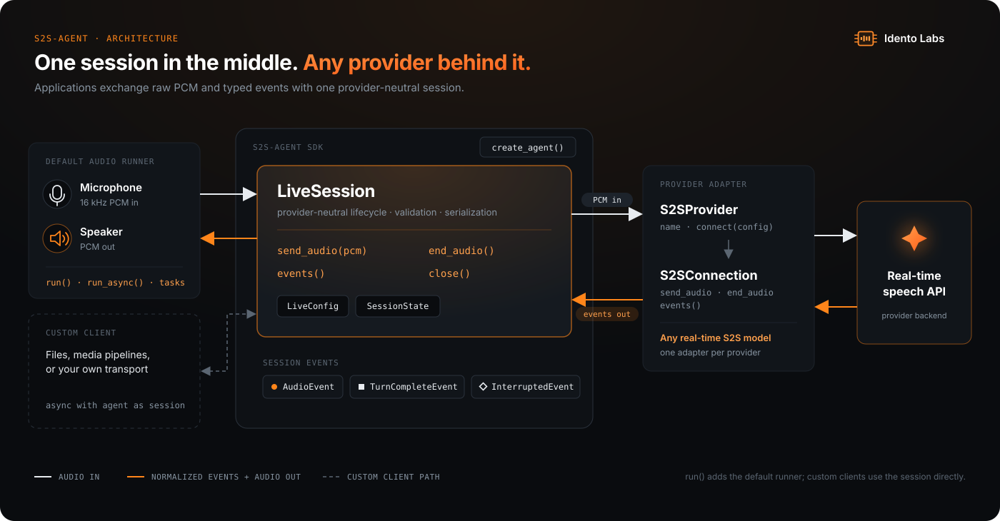

Speech in.
Speech out.
A small async Python SDK for real-time speech-to-speech agents. Stream raw audio, receive typed events, and swap providers without touching your application.
01 — Usage
One line to talk.
run() wires up the default microphone, speaker, connection, and
audio tasks. Drop down to the session API to stream PCM from files, media
pipelines, or your own transport.
SDK Usage
from s2s_agent import create_agent
agent = create_agent(
model="your-s2s-model",
voice="model-voice",
instructions="You are a concise and friendly voice assistant.",
)
agent.run() # talk until Ctrl+C02 — Architecture

03 — Quickstart
Run the demo. Start talking.
Clone the repository, install the audio extra, add a Gemini API key from
Google AI Studio, and start talking. Customize with --model,
--voice, and --instructions.
$ git clone https://github.com/aiminilabs0/s2s_agent.git
$ cd s2s_agent
$ python -m pip install -e ".[audio]"
$ export GEMINI_API_KEY="your-api-key"
$ python examples/talk.pyConnecting. Speak into your microphone; press Ctrl+C to stop.